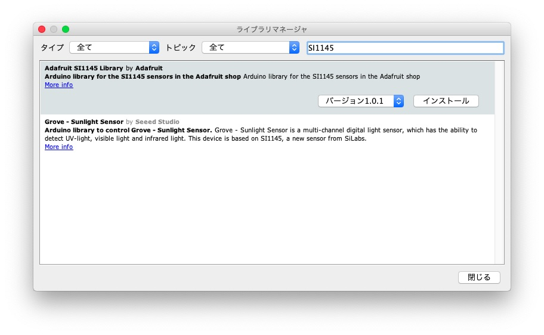

紫外線は、一年中地球に降り注いでいて、肌の老化など人体にも影響がありますが、その割にはあまり実態を理解していません。そこで今回は紫外線をUVセンサで測定してみます。
可視光よりも波長の短い、波長が10〜380nmの電磁波を紫外線といいます。紫外線の中でも波長の長い（紫に近い）領域を近紫外線といい、その中でも波長が315〜380nmの領域をUVA、280〜315nmの領域をUVB、200〜280nmの領域をUVCといいます。
太陽光にはUVA、UVB、UVCの紫外線が含まれていますが、UVCはオゾン層でほとんど吸収され、地表に到達する紫外線の99%がUVAだそうです（Wikipediaより）。
紫外線を浴びすぎると皮膚がんや白内障になりやすいことから、世界保健機構（WHO）が紫外線の強さを指標化したUVインデックスを定め、対策を推奨しています（気象庁「UVインデックスとは」）。

紫外線を測定するUVセンサを検索するとVEML6070、VEML6075、SI1145といったセンサを搭載したモジュールが見つかります。
今回はこの3つのセンサを比較します。各センサのスペックは次のようになっています。
3つのセンサとも、マイコンとはI2Cで通信します。評価にはM5Stackを使い、Arduino IDEでプログラミングすることにします。
VEML6070は、UVAの紫外線を測定するセンサです。UVスペクトルの感知範囲は320〜410nmで、波長に対する感度は次のようになっています（VEML6070データシートより）。
この「VEML6070搭載 UVセンサボード」から値を読んでみます。VEML6070はAdafruit社がライブラリを提供しているので、そのライブラリを使います。
Arduino IDEを立ち上げ、「ツール」メニュー→「ライブラリを管理…」を選択して、ライブラリマネージャを立ち上げます。検索窓に「VEML6070」と入力して、「Adafruit VEML6070 Library by Adafruit」を探し、最新版をインストールします。
ライブラリの使い方は簡単で、Adafruit_VEML6070オブジェクトを作り、beginメソッドで測定時間を指定して初期設定し、readUVメソッドで値を読み取ります。値は測定した紫外線量に相当する、キャリブレートされていない値です。
スケッチ例を参考に、M5StackのLCDにUV値を表示するプログラムを作りました。
プログラムをビルドして動かすと、UV値が表示されます。センサを明るいところに持っていったり、手で覆ったりすると、値が増減するのが確認できます。
VEML6075は、UVAとUVB、2帯域の紫外線を測定するセンサです。測定値からUVインデックスを計算する機能もあります。UVスペクトルの感知範囲はデータシートでは見つけられませんでしたが、波長に対する感度は次のようになっています（VEML6075データシートより）。
「VEML6075搭載 UVA/UVB/UVインデックスセンサモジュール」から値を読んでみます。VEML6075はAdafruit社がライブラリを提供しているので、そのライブラリを使います。Arduino IDEのライブラリマネージャで「VEML6075」を検索し、「Adafruit VEML6075 Library by Adafruit」を探し、最新版をインストールします。
VEML6075ライブラリは、「Adafruit BusIOライブラリ」も必要なので、ライブラリマネージャから「busio」で検索し、「Adafruit BusIO by Adafruit」の最新版もインストールします。
ライブラリにはセンサを初期設定するメソッドがいくつかありますが、通常の使い方ではデフォルト設定で使うことが推奨されています。従って、使い方はVEML6070と同様に簡単で、Adafruit_VEML6075オブジェクトを作り、beginメソッドでオブジェクトを初期設定し、setIntegrationTimeメソッドで測定時間を指定し、readUVAメソッドとreadUVBメソッドで、UVAとUVBのUV値を読み取ります。readUVIメソッドで、UVインデックスが読み取れます。
スケッチ例を参考に、M5StackのLCDにUV値を表示するプログラムを作りました。
SI1145は、UVインデックスと可視光、赤外線の強さが測定できるセンサです。UVスペクトルの感知範囲はデータシートでは見つけられませんでした。
SI1145もAdafruitがライブラリを提供しています。Arduino IDEのライブラリマネージャで「SI1145」を検索し、「Adafruit SI1145 Library by Adafruit」を探し、最新版をインストールします。

ライブラリの使い方はVEML6070やVEML6075と同様で、Adafruit_SI1145オブジェクトを作り、beginメソッドで初期設定し、readUVメソッドでUVインデックスを得ます。この値は100倍された値なので、100で割って実際の値にします。
スケッチ例を参考に、M5StackのLCDにUV値を表示するプログラムを作りました。
各センサの基本的な扱い方は確認できました。そこで、3つのセンサをまとめて扱い、UV値を取得して、比較してみます。
3つのUVセンサはいずれもI2Cでマイコンと通信し、I2Cアドレスも重なっていません。各センサモジュールのシリアルデータ（SDA)、シリアルクロック（SCL）にはプルアップ抵抗がついているので、各センサモジュールをバス接続するときは、プルアップ抵抗の値を調整したほうがよいのですが、調整せずにバス接続したところ、正常に動作しているので、そのまま使ってみます。
3つのUVセンサからデータを取得し、M5StackのLCDに表示し、さらにAmbientに送信して、値を比較してみます。
プログラムは次のようになります。
Ambientには次のようにデータを送ります。
| データ | 内容 |
|---|---|
| d1 | VEML6070(UVインデックス) |
| d2 | VEML6075(UVA) |
| d3 | VEML6075(UVB) |
| d4 | VEML6075(UVインデックス) |
| d5 | SI1145(UVインデックス) |
d1、d2、d5がUVインデックスなので、1つにまとめてチャート1に表示します。d2とd3はUVAとUVBの値なので、チャート2にまとめます。
これは7月25日の0時から24時までの24時間のUV値です。紫外線、特にUVBはガラスを透過しにくいので、窓の外で測定したほうがよいのですが、まだ梅雨も明けておらず、センサを雨に濡らしたくなかったので、ガラス窓の内側にセンサを置いて測定しました。この日はほぼ晴れでしたが、センサは直射日光にはあたっていません。日の出の時刻は4時44分、日没は18時52分です。
チャート1、2を見ると、各センサとも、日の出とともにUV値が上がり始め、12時台にピークになり、日没の30分前ぐらいからUV値が下がることが見て取れます。チャート2を見ると、ガラス窓の内側での測定の影響なのか、UVAよりもUVBがかなり低い値になっています。
チャート1で3つのセンサのデータを比較すると、VEML6070とSI1145のUVインデックス値は、絶対値は違いますが、ほぼ同じ傾向で上下しています。この2つの値を散布図にしてみると、ほぼリニアに相関していることが分かります。VEML6070とVEML6075の値も散布図にすると、ほぼリニアに相関していました。UVインデックス値については3つのセンサとも同じような傾向のデータが得られています。
UVAとUVBについては、ガラス窓の内側と外側、直射日光の当たる場所など、条件の違う場所で同時に測定して、データを比較する必要がありそうです。
VEML6070とVEML6075は、どちらもVUセンサで、価格もほぼ同じぐらいですが、VEML6070がUVインデックスに相当する値を出力するのに対して、VEML6075はUVAとUVBのUV値とUVインデックス値を出力するので、VEML6075の方が優れています。
SI1145は今回はUVセンサだけを評価しましたが、可視光や赤外線も検知でき、赤外線LEDと組み合わせることで近接センサを作ることもできるなど、応用の幅は広そうです。
UV値を測るならVEML6075、いろいろな応用を考えるならSI1145を使うのがよさそうです。
紫外線は日焼けや肌の老化など、日常生活に大きな影響があります。M5StackとUVセンサで簡単にUV値が測定できるので、みなさんも紫外線の影響をデータ化してみてはいかがでしょうか。